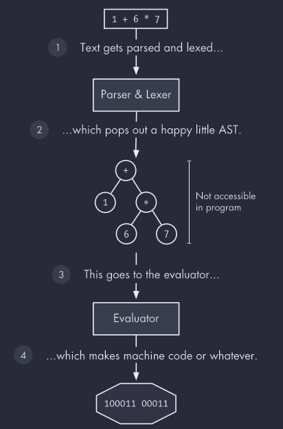
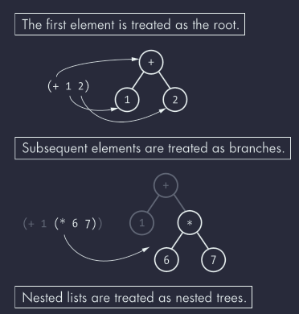
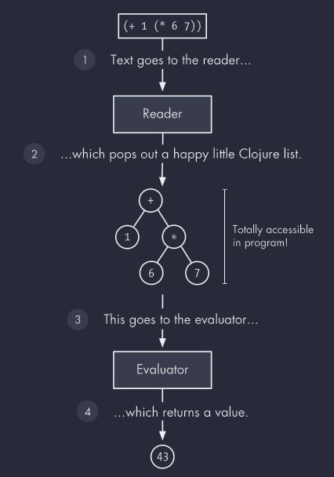
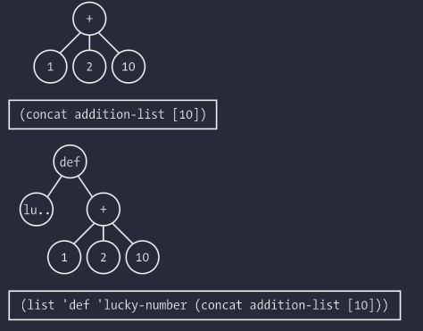
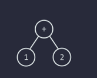

Clojure For The Brave and True Part II – Chapter 7 Alchemy: Reading, Evaluation and Macros
The philosopher's stone, along with elixir of life and Viagra, is one of the most well-known specimens of alchemical lore, pursued for its ability to transmute lead into gold. Clojure, however, offers a tool that makes the philosopher's stone look like a mere trinket: the macro.
Macros allow you to transform arbitrary expressions into valid Clojure, so you can extend the language itself to fit your needs. And you don't even have to be wizened old dude or lady in a robe to use them!.
To get just a sip of this power, consider this trivial macro:
(defmacro backwards
[form]
(reverse form))
(backwards (" backwards" " am" "I" str))
;; =>"I am backwards"
The backwards macro allows Clojure to successfully evaluate the expression (backwards (" backwards" " am" "I" str)), even though it doesn't follow Clojure's built-in syntax rules, which require an expression's operand to appear first (not to mention the rule that an expression not to be written in reverse order). Without backwards, the expression would fail harder than millenia of alchemists ironically spending their entire lives pursuing an impossible means of achieving immortality. With backwards, you've created your own syntax! You've extended Clojure so you can write code however you please! Better than turning lead into gold. I tell you!.
This Chapter gives you the conceptual foundation you need to go mad with power writing your own macros. It explains the elements of Clojure's evaluation model: the reader, the evaluator, and the macro expander. It's like the periodic table of Clojure elements. Think of how the periodic table reveals the properties of atoms: elements in the same column behave similarly because they have the same nuclear charge. Without the periodic table and its underlying theory, we'd be in the same position as the alchemists of yore, mixing stuff together randomly to see what blows up. But with a deeper understanding of the elements, you can see why stuff blows up and learn how to blow stuff up on purpose.
An Overview of Clojure’s Evaluation Model
Clojure (like all Lisp) has an evaluation model that differs from most other languages: it has a two-phase system where it reads textual source code, producing Clojure data structures. These data structures are then evaluated: Clojure traverses the data structures and performs action like function application or var lookup based on the type of the data structure. For example, when Clojure reads the text (+ 1 2), the result is a list data structure whose first elements is a + symbol, followed by the numbers 1 and 2. This data structure is passed to Clojure's evaluator, which looks up the function corresponding to + and applies that function to 1 and 2.
Languages that have this relationship between source code, data, and evaluation are called homoiconic1. (Incidentally, if you say homoiconic in front of you bathroom mirror three times with the lights out, the ghost of John McCarthy appears and hands you a parenthesis.) Homoiconic languages empower you to reason about your code as a set of data structures that you can manipulate programmatically. To put this into context, let's take a jaunt through the land of compilation.
Programming languages require a compiler of interpreter for translating the code you write, which consist of Unicode characters, into something else: machine instructions, code in another programming language, whatever. During this process, the compiler construct an abstract syntax tree (AST), which is a data structure that represents your program. You ca think of the AST as the input to the evaluator, which you can think of as a function that traverses the tree to produce the machine code or whatever as its output.
So far this sounds a lot like what I described for Clojure. However, in most languages the AST's data structure is inaccessible within the programming language; the programming language space and the compiler space are forever separated, and never the twain shall meet.

Figure 1: Figure 7-1: Evaluation in a non-lip programming language
But Clojure is different, because Clojure is a Lisp and Lisps are hotter than a stolen tamale. Instead of evaluating an AST that's represented as some inaccessible internal data structure, Lisps evaluate native data structures. Clojure still evaluates tree structures, but the tree are structured using Clojure lists and the nodes are Clojure values.
List are ideal for constructing tree structures. The first element of a list is treated as the root, and each subsequent element is treated as branch. To create a nested tree, you can just use nested lists, as shown in Figure 7-2.

Figure 2: Figure 7-2: Lists can easily be treated as trees.
First, Clojure's readers converts the text (+ 1(* 6 7)) into a nested list. (You'll learn more about the reader in the next section.) Then, Clojure's evaluator takes that data as input and produces a result. (It also compiles Java Virtual Machine (JVM) bytecode, which you'll learn about in Chapter 12. For now, we'll just focus on the evaluation model on a conceptual level.)
With this in mind, Figure 7-3 shows what Clojure's evaluation process looks like.
S-EXPRESSIONS
In your lisp adventures, you'll come across resources that explain that Lisps evaluate s-expressions. I avoid that term here because it's ambiguous: you'll see it used to refer to both the actual data object that gets evaluated and the source code that represents that data. Using the same term for two different components of Lisp evaluation (code and data) obscures what's important: your text represents native data structures, which is unique and awesome. For a great treatment of s-expressions, check out https://www.gigamonkeys.com/book/syntax-and-semantics.html

Figure 3: Figure 7-3: Evaluation in Clojure
However, the evaluator doesn't actually care where its input comes from; it doesn't have to come from the reader. As a result, you can send your program's data structures directly to the Clojure evaluator with eval.
(def addition-list (list + 1 2)) ;; => 3
That's right, baby! Your program just evaluated a Clojure list. You'll read all about Clojure's evaluation rules soon, but briefly, this is what happened: when Clojure evaluated the list, it looked up the list that addition-list refers to; then it looked up the function corresponding to the + symbol; and then it called that function with 1 and 2 as arguments, returning 3. The data structures of your programming running program and those of the evaluator live in the same space, and the upshot is that you can use the full power of Clojure and all the code you've written to construct data structures for evaluation:
(eval (concat addition-list [10])) ;; =>13 (eval (list 'def 'lucky-number (concat addition-list [10]))) ;; =>#'user/luck-number lucky-number ;; =>13
Figure 7-4 shows the lists you sent to the evaluator in these two examples.

Figure 4: Figure 7-4: The lists you evaluated
Your program can talk directly to its own evaluator, using its own functions and data to modify itself as it runs! Are you going mad with power yet? I hope so! Hold on to some of your sanity, though, because there's still more to learn.
So Clojure homoiconic; it represents abstract syntax tree using lists, and you write textual representations of lists when you write Clojure code. Because the code you write represents data structures that you're used to manipulating and the evaluator consumes those data structures, it's easy to reason about how to programmatically modify your program.
Macros are what allow you to perform those manipulations easily. The rest of this chapter covers Clojure's reader and evaluation rules in detail to give you a precise understanding of how macros work.
The Reader
The reader converts the textual source code you save in a file or enter in the REPL into Clojure data structures. It's like a translator between the human world of Unicode characters and Clojure's world of lists, vectors, maps, symbols, and other data structures. In this section, you'll interact directly with the reader and learn how a handy feature, the reader macro, lets you write code succinctly2.
Reading
To understand reading, let's first take a close look at how Clojure handles the text you type in the REPL. First, the REPL prompts you for text:
user=>
Then you enter a bit of text. Maybe something like this:
user=> (str "To understand what recursion is, " " you must first understand recursion.")
That text is really just a sequence of Unicode characters, but it's meant to represent a combination of Clojure data structures. This textual representation of data structures is called reader form. In this example, the form represents a list data structure that contains three more forms: the str symbol and two strings.
Once you type those characters into prompt and press ENTER, that text goes to the reader (remember REPL stands for read-eval-print-loop). Clojure reads the stream of characters and internally produces the corresponding data structures. It then evaluates the data structures and prints the textual representation of the result:
"To understand what recursion is, you must first understand recursion."
Reading and evaluation are discrete processes that you can perform independently. One way to interact with the reader directly is by using the read-string function. read-string takes a string as an argument and processes it using Clojure's reader, returning a data structure:
(read-string "(+ 1 2)") ;; =>(+ 1 2) (list? (read-string "(+ 1 2)")) ;; =>true (conj (read-string "(+ 1 2)") :zagglewag) ;; =>(:zagglewag + 1 2)
In the first examples, read-string reads the string representation of a list containing a plus symbol and the numbers 1 and 2. The return value is an actual list, as proven by the second example. The last example uses conj to prepend a keyword to the list. The takeway is that reading and evaluating are independent of each other. You can read text without evaluating it, and you can pass the result to other functions. You can also evaluate the result, if you want:
(eval (read-string "(+ 1 2)")) ;; => 3
In all examples so far, there's been a one-to-one relationship between the reader form and the corresponding data structures. Here are more examples of simple reader forms that directly map to the data structures they represent:
- () A list reader form
- str A symbol reader form
- [1 2] A vector reader form containing two number reader forms
- {:sound "hoot"} A map reader form with a keyword reader form and string reader form
However, the reader can employ more complex behavior when converting text to data structures. For example, remember anonymous functions?
(#(+ 1 %) 3) ;; => 4
Well, try this out:
(read-string "#(+ 1 %)") ;; =>(fn* [p1__9907#] (+ 1 p1__9907#))
Whoa! This is not the one-to-one mapping that we're used to. Reading #(+ 1 %) somehow resulted in a list consisting of the fn* symbol, a vector containing a symbol, and a list containing three elements. What just happened?
Reader Macros
I'll answer my own question: the reader used a reader macro to transform #(+ 1 %). Reader macros are sets of rules for transforming text into data structures. They often allow you to represent data structures in more compact ways because they take an abbreviated reader form and expand it into a full form. They're designated by macro characters like ' (the single quote), #, and @. They're also completely different from the macros we'll get to later. So as not to get the two confused, I'll always refer to reader macros using the full term reader macros.
For example, you can see how the quote reader macro expands the single quote characters here:
(read-string "'(a b c)") ;; => : (quote (a b c))
When the reader encounters the single quote, it expands it to a list whose first member is the symbol quote and whose second member is the data structure that followed the single quote. The deref reader macro works similarly for the @ character:
(read-string "@var") ;; => (clojure.core/deref var)
Reader macros can also do crazy stuff like cause text to be ignored. The semicolon designates the single-line comment reader macro:
(read-string "; ignore!\n(+ 1 2)") ;; => (+ 1 2)
And that's the reader! Your humble companion, toiling away a transforming text into data structures. Now let's look at how Clojure evaluates those data structures.
The Evaluator
You can think of Clojure's evaluator as a function that takes a data structure as an argument, processes the data structure using rules corresponding to the data structure's type, and returns a result. To evaluate a symbol, Clojure looks up what the symbol refers to. To evaluate a list, Clojure looks at the first element of the list and calls a function, macro, or special form. Any other values (including strings, numbers, and keywords) simply evaluate to themselves.
For example, let's say you've types (+ 1 2) in the REPL. Figure 7-5 shows a diagram of the data structure that gets sent to the evaluator.

Figure 5: Figure 7-5: The data structure for (+ 1 2)
Because it's a list, the evaluator starts by evaluating the first element in the list. The first element is the plus symbol, and the evaluator resolves that by returning the corresponding function. Because the firs element in the list is a function, the evaluator evaluates each of the operands. The operands 1 and 2 evaluate to themselves because they're not lists or symbols. Then the evaluator calls the addition function with 1 and /2/2 as the operands, and return the result.
The rest of this section explain the evaluator's rules for each kind of data structure more fully. To show the evaluator works, we'll just run each example in the REPL. Keep in mind that the REPL first reads your text to get a data structure, then sends that data structure to the evaluator, and then prints the result as text.
=DATA=
I write about how Clojure evaluates data structures in this chapter but that's imprecise. Technically, data structure refers to some kind of collection, like a linked list or b-tree, or whatever, but I also use the term to refer to scalar (singular, noncollection) values like symbols and numbers. I considering using the term data objects but didn't want to imply object-oriented programming, or using just data but didn't want to confuse that with data as a concept. So data structure it is, and if you find this offensive, I will give you a thousand apologies, thoughfully organized in a Van Emde Boas tree.
These Things Evaluate to Themselves
Whenever Clojure evaluates data structures that aren't a list, or symbol, the result is the data structure itself:
true
;; => true
false
;; => false
{}
;; => {}
:huzzah
;; => :huzzah
Empty list evaluate to themselves, too:
() ;; => ()
Symbols
One of your fundamental tasks as a programmer is creating abstractions by associating names with values. You learned how to do this in Chapter 3 by using def, let, and functions, macros, data, and anything else you can use, and evaluates them by resolving them. to resolve a symbol, Clojure traverses3 any bindings you've created and then looks up the symbol's entry in a namespace mapping, which you learned about in Chapter 6. Ultimately. a symbol resolve to either a value or special form–a built-in Clojure operator that provides fundamental behavior.
In general, Clojure resolves a symbol by:
- Looking up wether the symbol names a special form if it doesn't…
- Looking up whether the symbol corresponds to a local binding. If it doesn't…
- Trying to find a namespace mapping introduced by def. If it doesn't…
- Throwing an exception.
Let's first look at a symbol resolving to a special form. Special forms, like if, are always used in the context of an operation; they're always the first element in a list:
(if true :a :b) ;; => :a
In this case, if is a special form and it's being used as an operator. If you try to refer to a special form outside of this context, you'll get an exception:
if ;; => Unable to resolve symbol: if in this context
Next, let's evaluate some local bindings. A local binding is any association between a symbol and a value that wasn'tcreated by def. In the next example, the symbol x is bound to 5 using let. When the evaluator resolves x, it resolves the symbol x to the value 5:
(let [x 5] (+ x 3)) ;; => 8
Now if we create a namespace mapping of x to 15, Clojure resolve it accordingly:
(def x 15) (+ x 3) ;; => 18
In the next example, x is mapped to 15, but we introdice a local binding of x to 5 using let. so x is resolved 5.
(def x 15) (let [x 5] (+ x 3)) ;; => 8
you can nest bindings, in which case the most recently defined binding takes precedence:
(let [x 5]
(let [x 6]
(+ x 3)))
;; => 9
Function also create local bindings, binding parameters to arguments within the function body. In this next example, exclaim is mapped to a function. Within the function body, the parameter name exclamation is bound to the argument passed to the function:
(defn exclaim [exclamation] (str exclamation "!")) (exclaim "Hadoken") ;; => "Hadoken!"
Finally, in this last example, map and inc both refer to functions:
(map inc [1 2 3]) ;; => (2 3 4)
When Clojure evaluates this code, it first evaluates the map symbol, looking up the corresponding function and applying it to its arguments. The symbol map refers to the map function, but it shouldn't be confused with the function itself. The map symbol is still a data structure, the same way that the string "fried salad" is a data structure, but it's not the same as the function itself:
(read-string "+") ;; => + (type (read-string "+")) ;; =>clojure.lang.Symbol (list (read-string "+") 1 2) ;; => (+ 1 2)
In these examples, you're interacting with the plus symbol, +, as a data structure. You're not interacting with the addition function that it refers to. If you evaluate it, Clojure looks up the function and applies it:
(eval (list (read-string "+") 1 2)) ;; => 3
On their own, symbol and their referents don't actually do anyting; Clojure performs work by evaluating lists.
Lists
If the data structure is an empty list, it evaluates to an empty list:
(eval (read-string "()")) ;; => ()
Otherwise, it is evaluated as a call to the first element in the list. The way the call is performed depends on the nature of that first element.
Function Calls
When performing function call, each operand is fully evaluated and then passed to the function as an argument. In this example, the + symbol resolves to a function:
(+ 1 2) ;; => 3
Clojure sees that the list's head is a function, so it proceeds to evaluate the rest of the elements in the list. The operands 1 and 2 both evaluate to themselves, and after they're evaluated, Clojure applies the addition function to them.
You can also nets function calls:
(+ 1 (+ 2 3)) ;; => 6
Even though the second argument is a list, Clojure follows the same process here: look up the + symbol and evaluate each argument. To evaluate the list (+ 2 3), Clojure resolves the first member to the addition function and proceeds to evaluate each of the arguments. In this way, evaluation is recursive.
Special Forms
You can also call special forms. In general, special forms are special because they implement core behavior that can't be implemented with functions.
for example:
(if true 1 2) ;; => 1 (if false 1 3) ;; => 3
Here, we ask clojure to evaluate a list beginning with the symbol if. That if symbol gets resolved to the if special form, and Clojure calls that special form with the operands true, 1. and 2.
Special forms don't follow the same evaluation rules as normal functions. For example, when you call a function, each operand gets evaluated. However, with if you don't want each operand to be evaluated. You only want certain operands to be evaluated, depending on whether the condition is true or false.
Another important special form is quote. You've seen lists represented like this:
'(a b c)
As you saw in "The Reader" on the page 153, this invokes a reader macro so that we end up with this:
(quote (a b c)) ;; => (a b c)
Normally, Clojure would try to resolve the symbol and then call it because it's the first element in the a list. The quote special form tells the evaluator, "instead of evaluating my next data structure like normal, just return the data structure itself." In this case, you end up with a list consisting of the symbol a, b, and c.
def, let, loop, fn, do, and recur are all special forms as well. You can see why: they don't get evaluated the same way as functions. For example, normally when the evaluator evaluates a symbol, it resolves that symbol, but def and let obviously don't behave that way. Instead of resolving symbols, they actually create associations between symbol and values. So the evaluator receives a combination of data structures from the reader, and it goes about resolving the symbols and calling the functions or special forms at the beginning of each list. But there's more! You can also place a macro at the beginning of a list instead of a function or a special form, and this can give you tremendous power over how the rest of the data structures are evaluated.
Macros
Hmm… Clojure evaluate data structures–the same data structure that we write and manipulate in our Clojure programs. Wouldn't it be awesome if we could use Clojure to manipulate the data structures that Clojure evaluates? Yes, yes it would! And guess what? You can do this with macros! Did your head explode! Mine did!
To get and idea of what macros do, let's look at some code. Say we want to write a function that makes Clojure read infix notation4 (such as 1 + 1) instead of its normal notation with the operator (+ 1 1). This example is not a macro. Rather, it merely shows that you can write code using infix notation and then use Clojure to transform it so it will actually execute.
(read-string "(1 + 1)") ;; => (1 + 1)
Clojure will throw an exception if you try to make it evaluate this list:
(eval (read-string "(1 + 1)")) ;; class java.lang.Long cannot be cast to class clojure.lang.IFn
However, read-string returns a list, and you can use Clojure to reorganize that list into something it can successfully evaluate:
(let [infix (read-string "(1 + 1)")] (list (second infix) (first infix) (last infix))) ;; => (+ 1 1)
If you eval this, it returns 2, must as you'd expect:
(eval (let [infix (read-string "(1 + 1)")] (list (second infix) (first infix) (last infix)))) ;; => 2
This is cool, but it's also quite clunky. That's where macros come in. Macros give you convenient to manipulate lists before Clojure evaluates them. Macros are a lot like functions: they take arguments and return a value, just like a function would. They work on Clojure data structure, just like function do. What makes them unique and powerful is the way they fit in to the evaluation process. They are executed in between the reader and the evaluator–so they can manipulate the data structures that the reader spits out and transform with those data structures before passing them to the evaluator.
Let's look and example:
(defmacro ignore-last-operand [function-call] (butlast function-call)) (ignore-last-operand (+ 1 2 10)) ;; [L-1] ;; => 3 ;; This will not print anyting (ignore-last-operand (+ 1 2 (println "Look at mee!"))) ;; => 3
at [L-1] the macro ignore-last-operand receives the list (+ 1 2 10) as its argument, not the value 13. This is very different from a function call, because function call always evaluate all of the arguments passed in, so there is no possible way for a function to reach into one its operands and alter or ignore it. By contrast, when you call a macro, the operands are not evaluated. In particular, symbol are not resolved; they are passed as symbols. List are not evaluated either; that is, the first element in the list is not called as a function, special for, or macro. Rather, the unevaluated list data structure is passed in.
Another difference is that the data structure returned by a function is not evaluated, but the data structure returned by a macro is. The process of determining the return value of macro is called macro expansion, and you can use the function macroexpand to see what data structure a macro returns before that data structure is evaluated. Note that you have to quote the form that you pass to macroexpand:
(macroexpand '(ignore-last-operand (+ 1 2 10))) ;; => (+ 1 2) (macroexpand '(ignore-last-operand (+ 1 2 (println "Look at me!")))) ;; => (+ 1 2)
Syntactic Abstraction and the -> Macro
Summary
Exercises
Footnotes:
a property of a programming language where its code is represented as a fundamental data structure of the language itself, allowing program to be manipulated as stat. This "code is data" relationship makes metaprogramming, such as writing macros, more straigthorward and powerful because the code can be treated and transformed just like any other data type. Example of homoiconic languages include Lisp and its dialects like Clojure.
in a brief clearly expressed manner.
To visit all the nodes or elements in a data structure, such as a tree or graph.
A mathematical expression format where operators are written between operands they act on.